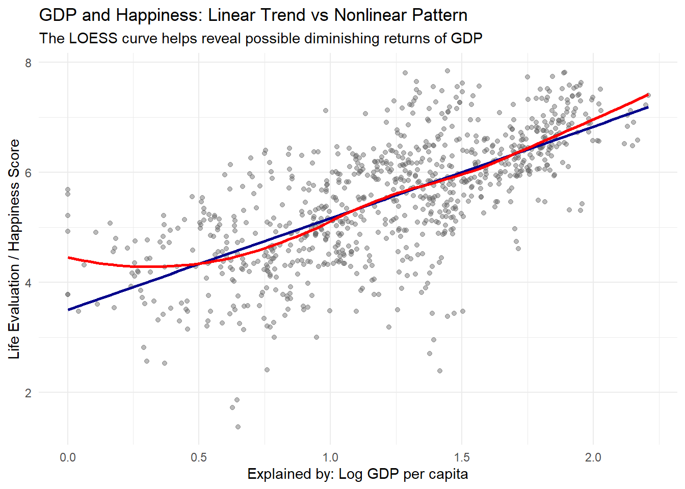
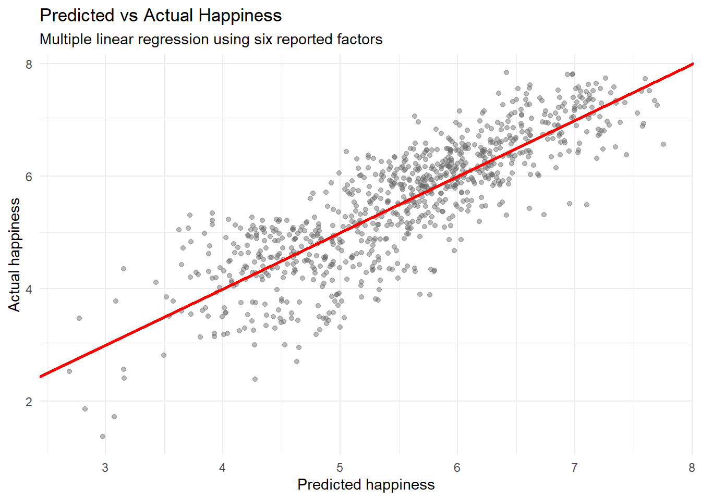

Show code
#load packages
library(tidyverse)
library(ggplot2)
library(readxl)
library(broom)
library(rpart)
library(rpart.plot)
#load data
happiness <- read_excel("world_hapiness_datasets/WHR25_Data_Figure_2.1v3.xlsx")
#clean data
happiness_clean <- happiness %>%
rename(
year = Year,
rank = Rank,
country = `Country name`,
happiness = `Life evaluation (3-year average)`,
gdp = `Explained by: Log GDP per capita`,
social_support = `Explained by: Social support`,
health = `Explained by: Healthy life expectancy`,
freedom = `Explained by: Freedom to make life choices`,
generosity = `Explained by: Generosity`,
corruption = `Explained by: Perceptions of corruption`,
dystopia_residual = `Dystopia + residual`
) %>%
mutate(across(c(happiness, gdp, social_support, health, freedom,
generosity, corruption, dystopia_residual), as.numeric))
#filter complete cases
happiness_complete <- happiness_clean %>%
filter(
!is.na(happiness),
!is.na(gdp),
!is.na(social_support),
!is.na(health),
!is.na(freedom),
!is.na(generosity),
!is.na(corruption)
)1. Project Outline
Every March, the World Happiness Report turns well-being into a global headline: Finland is once again ranked as the happiest country in the world. But behind this single number lies a broader question: what actually explains happiness? Is it mainly economic prosperity, or do social support, health, freedom, and trust matter just as much?
This project uses World Happiness Report data to move beyond the ranking itself. Instead of only asking which countries are happiest, we investigate which factors are most strongly associated with happiness, where countries form similar well-being profiles, and which parts of happiness remain unexplained by the available variables.
2. Research Questions
Q1. What explains happiness?
To what extent can happiness be explained by economic and social factors such as GDP, social support, and freedom?
This question explores whether richer countries are automatically happier, or whether other dimensions such as social support and freedom help explain why some countries achieve higher well-being than others.
Plot 1: GDP and happiness
This plot compares GDP contribution with happiness. A linear regression line shows the general direction of the relationship, while the LOESS curve allows for a non-linear pattern. This is useful because the relationship between income and happiness may weaken at higher income levels.
Show code
#This is a plot, not a full model section.
ggplot(happiness_complete, aes(x = gdp, y = happiness)) + #Create the plot and define axes (use dataset happiness_clean)
geom_point(alpha = 0.45, color = "gray40") + #Add scatter points (transparency=0.45, each point reprents a country)
geom_smooth(method = "lm", se = FALSE, color = "darkblue", linewidth = 1) + #Add linear regression line (method = "lm" → linear regression so straight line, se = FALSE → no confidence interval shading)
geom_smooth(method = "loess", se = FALSE, color = "red", linewidth = 1) + #Add LOESS curve (nonlinear trend)
#Blue line → simple linear assumption
#Red line → real pattern (may bend)
labs( #sets text elements
title = "GDP and Happiness: Linear Trend vs Nonlinear Pattern",
subtitle = "The LOESS curve helps reveal possible diminishing returns of GDP",
x = "Explained by: Log GDP per capita",
y = "Life Evaluation / Happiness Score"
) +
theme_minimal() # removes background clutter and creates clean design
>>>>>>> mainClaim type: Exploratory
Goal: To identify the countries whose happiness goes beyond what wealth, health and freedom can explain — and open the question of what else might be holding them up.
Q2. Is the world getting happier over time?
The dataset spans 2011–2024, so we can step back from any single country and ask the simplest question of all: across all these years, is global happiness trending up, down, or holding steady?
Planned output: - Line chart of the average happiness score per year
Interpretation:
GDP is positively associated with happiness, meaning that countries with higher economic contribution usually report higher life evaluations. However, the LOESS curve can show whether the increase becomes flatter at higher GDP levels. This supports the idea that money matters, but may not explain happiness indefinitely.
Plot 2: Social support and happiness
This plot focuses on the relationship between social support and happiness. It directly supports the central story of the project: well-being is not only about wealth, but also about relationships and social connection.
Show code
# This is a plot.
ggplot(happiness_complete, aes(x = social_support, y = happiness)) +
geom_point(alpha = 0.45, color = "gray40") +
geom_smooth(method = "lm", se = FALSE, color = "darkgreen", linewidth = 1) +
labs(
title = "Social Support and Happiness",
subtitle = "Countries with stronger social support tend to report higher happiness",
x = "Explained by: Social support",
y = "Life Evaluation / Happiness Score"
) +
theme_minimal()
Interpretation:
The plot shows whether countries with stronger social support also report higher happiness scores. If the relationship is strong, it supports the argument that social relationships can be as important as economic wealth in explaining well-being.
Plot 3: Which factors are most strongly associated with happiness?
Instead of looking at only one variable at a time, this plot compares the correlation between happiness and all explanatory factors. It summarizes which variables are most closely related to happiness.
Show code
#This is a calculation + plot.It is not a predictive model, but it calculates correlations and then plots them.
cor_data <- happiness_complete %>%
select(happiness, gdp, social_support, health, freedom, generosity, corruption)
correlations <- cor_data %>%
summarise(
GDP = cor(happiness, gdp),
`Social Support` = cor(happiness, social_support),
Health = cor(happiness, health),
Freedom = cor(happiness, freedom),
Generosity = cor(happiness, generosity),
Corruption = cor(happiness, corruption)
) %>%
pivot_longer(
cols = everything(),
names_to = "factor",
values_to = "correlation"
) %>%
arrange(desc(correlation))
ggplot(correlations, aes(x = reorder(factor, correlation), y = correlation)) +
geom_col(fill = "steelblue") +
coord_flip() +
labs(
title = "Correlation with Happiness",
subtitle = "Comparison of the reported explanatory factors",
x = "Factor",
y = "Correlation with happiness"
) +
theme_minimal()
Claim type: Exploratory
Goal: To describe the overall trend in global happiness over time and provide context for the country-level questions above.
5. Context & Target Audience
Context: Journalistic — a data-driven story for an educated general audience curious about global well-being, not a peer-reviewed paper.
Audience: General readers, students and the policy-curious public; no statistical background assumed.
Candidate story angle
“Rich, free — and still restless: what five years of global happiness data reveal about the part of well-being money can’t buy.” Headline ranking as the hook (Q1), the wealth-vs-relationships tension as the body (Q2), and the unexplained residual as the twist (Q3).
Presentation formats (mapped to each question)
• Choropleth world map — happiness scores by country, shaded by score range — sets the scene for Q1.
• Slope / line chart — top-10 countries’ scores across 2015–2019, plus a small “biggest movers” table — the evidence for Q1.
• Annotated scatter — GDP per capita vs. happiness with a smoothed fit, plus a correlation heatmap — carries Q2.
• Coefficient & residual chart — which factors weigh most, and a ranked list of over- / under-performers by residual — delivers Q3.
• Interactive dashboard — lets readers filter by year or region and explore on their own — ties the three threads together.
These formats prioritise accessibility and visual storytelling over statistical formalism, which fits a journalistic audience that wants the story behind the numbers.
Proposed Next Step
Load the five CSV files in R and harmonise them into one tidy data frame: add a Year column, standardise the differing column names, and decide how to handle the columns that exist only in some years (Region, the confidence-interval fields, and the Dystopia Residual). After that, begin exploratory analysis for Q1.
=======Interpretation:
This plot helps compare the relative importance of different factors. If GDP, social support, health, and freedom all show strong correlations, then happiness should be understood as multi-dimensional rather than purely economic.
Plot 4: Country profiles using clustering
This plot uses k-means clustering to group countries with similar happiness profiles. Unlike regression, clustering does not predict happiness. Instead, it discovers patterns in the data and groups countries based on similarities across multiple factors.
Show code
#This is a model + plot
#kmeans() = clustering model
#ggplot() = visualization of the cluster results
cluster_data <- happiness_complete %>%
filter(year == 2024) %>%
select(country, happiness, gdp, social_support, health, freedom, generosity, corruption)
cluster_scaled <- cluster_data %>%
select(gdp, social_support, health, freedom, generosity, corruption) %>%
scale()
set.seed(123)
clusters <- kmeans(cluster_scaled, centers = 3)
cluster_data <- cluster_data %>%
mutate(cluster = as.factor(clusters$cluster))
ggplot(cluster_data, aes(x = gdp, y = social_support, color = cluster)) +
geom_point(size = 3, alpha = 0.8) +
labs(
title = "Country Clusters Based on Happiness Factors",
subtitle = "k-means clustering using GDP, social support, health, freedom, generosity, and corruption",
x = "Explained by: Log GDP per capita",
y = "Explained by: Social support",
color = "Cluster"
) +
theme_minimal() 
Interpretation:
The clustering model groups countries into different profiles. For example, some countries may combine high GDP and high social support, while others may show lower values across several factors. This supports the idea that there are different pathways to happiness, not just one universal explanation.
Q1 Summary
The Q1 analysis shows that happiness is associated with several dimensions. GDP matters, but the relationship is not the full story. Social support, freedom, health, and institutional trust also contribute to differences in happiness. The clustering model further suggests that countries form different well-being profiles rather than following one single pattern.
Q2. What remains unexplained?
What part of happiness cannot be explained by observable variables?
This question uses modeling to estimate happiness from the reported factors and then examines the residuals. Residuals are the differences between actual and predicted happiness. They help identify countries that are happier or less happy than expected based on the model.
Plot 1: Predicted vs actual happiness
A multiple linear regression model is used to predict happiness from several explanatory factors. The plot compares predicted happiness with actual happiness. If the model fits well, the points should lie close to the diagonal line.
Show code
#This is a model + plot.
#lm() = linear regression model
#ggplot() = model performance visualization
model_data <- happiness_complete %>%
select(country, year, happiness, gdp, social_support, health, freedom, generosity, corruption)
lm_model <- lm(
happiness ~ gdp + social_support + health + freedom + generosity + corruption,
data = model_data
)
model_results <- model_data %>%
mutate(
predicted = predict(lm_model),
residual = happiness - predicted
)
ggplot(model_results, aes(x = predicted, y = happiness)) +
geom_point(alpha = 0.45, color = "gray40") +
geom_abline(slope = 1, intercept = 0, color = "red", linewidth = 1) +
labs(
title = "Predicted vs Actual Happiness",
subtitle = "Multiple linear regression using six reported factors",
x = "Predicted happiness",
y = "Actual happiness"
) +
theme_minimal()
Interpretation:
The predicted-versus-actual plot shows how well the regression model reconstructs happiness scores. Points close to the red diagonal line are well explained by the model, while points farther away indicate countries or years where the model does not fully capture the actual happiness score.
Plot 2: Countries that deviate from the model
This plot shows the strongest positive and negative residuals. Positive residuals mean that a country is happier than predicted by the model. Negative residuals mean that a country is less happy than predicted.
Show code
#This is a model-result plot.It does not fit a new model, but it visualizes the residuals from the previous regression model.
residual_summary <- model_results %>%
group_by(country) %>%
summarise(mean_residual = mean(residual, na.rm = TRUE)) %>%
ungroup()
top_residuals <- residual_summary %>%
slice_max(mean_residual, n = 8)
bottom_residuals <- residual_summary %>%
slice_min(mean_residual, n = 8)
residual_plot_data <- bind_rows(top_residuals, bottom_residuals) %>%
mutate(type = if_else(mean_residual > 0, "Happier than predicted", "Less happy than predicted"))
ggplot(residual_plot_data, aes(x = reorder(country, mean_residual), y = mean_residual, fill = type)) +
geom_col() +
coord_flip() +
labs(
title = "Countries That Deviate Most from the Regression Model",
subtitle = "Average residuals across available years",
x = "Country",
y = "Average residual",
fill = "Residual type"
) +
theme_minimal()
Interpretation:
This plot is the main “twist” of the analysis. It shows that even after accounting for GDP, social support, health, freedom, generosity, and corruption, some countries still differ from model expectations. These deviations may reflect factors not directly included in the dataset, such as culture, inequality, mental health, political stability, or historical context.
Plot 3: Decision tree model
The decision tree provides a different modeling perspective. Unlike linear regression, it splits the data into groups based on factor thresholds. This makes it useful for identifying which variables separate countries with lower and higher happiness scores.
Show code
#This is a model / model visualization.
#rpart() = decision tree model
#rpart.plot() = visualization of the model structure
tree_model <- rpart(
happiness ~ gdp + social_support + health + freedom + generosity + corruption,
data = model_data,
method = "anova",
control = rpart.control(cp = 0.01)
)
rpart.plot(
tree_model,
main = "Decision Tree Predicting Happiness",
type = 2,
extra = 101,
fallen.leaves = TRUE
)
Interpretation:
The decision tree is useful because it gives a non-linear view of happiness. It identifies variables that split countries into groups with different average happiness levels. If social support, GDP, or health appear near the top of the tree, this suggests that these variables are especially important for separating higher- and lower-happiness observations.
Final Conclusion
The analysis shows that happiness is not determined by wealth alone. GDP is clearly associated with happiness, but social support, freedom, health, and institutional trust also play important roles. The clustering model shows that countries follow different happiness profiles, while the regression and decision tree models show that some patterns can be modeled but not fully explained.
Overall, the project supports the idea that economic prosperity matters, but it cannot fully capture human well-being. The residuals show that there is still an unexplained part of happiness—possibly shaped by culture, inequality, mental health, social stability, or other factors not directly measured in the dataset.
Main takeaway:
Wealth matters, but happiness is broader than money.